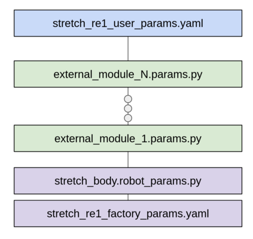

Stretch Body: Parameters Tutorial
In this tutorial we will discuss how parameters are managed in Stretch Body and show examples of how to customize your robot by overriding parameters.
Note: This tutorial applies to Stretch Body version 0.1.x or greater.
Overview
Stretch Body shares a global set of parameters across all of its Python Devices. A quick way to see what parameters are available are with the stretch_params.py tool:
stretch_params.py
################################### Parameters for stretch-re1-1039 ######################################
Origin Parameter Value
----------------------------------------------------------------------------------------------------------
stretch_re1_factory_params.yaml param.head_pan.req_calibration 0
stretch_re1_factory_params.yaml param.head_tilt.pwm_limit 885
...
The tool display each parameter's value as well as which parameter file it was loaded from.
By grepping the tool's output you can query specific settings. For example, to query contact thresholds for the arm:
stretch_params.py | grep arm | grep contact_thresh
stretch_re1_factory_params.yaml param.arm.contact_thresh_max_N [-100, 100]
stretch_re1_factory_params.yaml param.arm.contact_thresh_N [-64.46241590881348, 66.51084520568847]
Now if you want to override the default contact thresholds for the arm, you could add the following to your stretch_re1_user_params.yaml:
arm:
contact_thresh_N: [-80.0,80.0]
Run the tool again and we see:
stretch_params.py | grep arm | grep contact_thresh
stretch_re1_factory_params.yaml param.arm.contact_thresh_max_N [-100, 100]
stretch_re1_factory_params.yaml param.arm.contact_thresh_N [-80, 80]
Data Organization
Parameters' data sources may be either a Python dictionary or a YAML file. The robot's YAML files are found under $HELLO_FLEET_PATH/$HELLO_FLEET_ID. The Python dictionaries may come from any Python module on the Python path.
There are three types of parameters:
- Factory Parameters
stretch_re1_factory_params.yaml: These are common factory settings shared across RE1s as well as factory calibration data that is specific to your robot.stretch_body.robot_params.py: These are common factory settings shared across RE1s that may be automatically updated over time as new versions of Stretch Body are released.- External Parameters
<external_module>.params.py: These are parameters for devices outside of Stretch Body (such as the devices found in the Stretch Tool Share)- User Parameters
stretch_re1_user_params.yaml: These are user customizations of the robot's settings
As shown below, the parameters are loaded into the robot_params dictionary in a specific order, starting with stretch_re1_factory_params.yaml. Loading of subsequent parameters overwrites earlier parameters. As such, the stretch_re1_user_params.yaml parameters can overwrite any factory parameters or external parameters.

You can configure which external parameters' data sources are loaded, and their order, in your stretch_re1_user_params.yaml. For example:
factory_params: stretch_re1_factory_params.yaml
params:
- stretch_tool_share.usbcam_wrist_v1.params
- stretch_tool_share.stretch_dex_wrist_beta.params
Here we see that the name of the factory parameters file is stretch_re1_factory_params.yaml. We also see that two external parameter sets will be loaded. In this example, the order of parameter precedence would be:
stretch_re1_user_params.yamlstretch_tool_share.stretch_dex_wrist_beta.params.pystretch_tool_share.usbcam_wrist_v1.params.pystretch_body.robot_params.pystretch_re1_factory_params.yaml
Working with Parameters Programmatically
Stretch Body is organized as a set of classes that extend the base Device class. Each Device has access to a set of global parameters that are stored within the Device as a dictionary. These are:
device.params: the parameters for the specific devicedevice.robot_params: global set of parameters
For example, let's look at the Robot class:
class Robot(Device):
def __init__(self):
Device.__init__(self,'robot')
...
When instantiating its Device base class it loads the robot parameters of the various YAML files and Python dictionaries.
class Device:
def __init__(self,name):
self.name=name
self.user_params, self.robot_params = RobotParams.get_params()
try:
self.params=self.robot_params[self.name]
except KeyError:
print('No device params found for %s'%name)
self.params={}
We can explore these parameters via iPython.
import stretch_body.robot as robot
In [2]: r=robot.Robot()
In [3]: r.params
Out[3]:
{'batch_name': 'Irma',
'log_to_console': 0,
'serial_no': 'stretch-re1-1039',
'stow': {'arm': 0.0,
'head_pan': 0.0,
'head_tilt': 0.0,
'lift': 0.2,
'stretch_gripper': 0,
'wrist_yaw': 3.4},
'tool': 'tool_none',
'use_arm': 1,
'use_base': 1,
'use_end_of_arm': 1,
'use_head': 1,
'use_lift': 1,
'use_monitor': 1,
'use_pimu': 1,
'use_sentry': 1,
'use_wacc': 1,
'verbose': 0}
In [4]: r.arm.params
Out[4]:
{'chain_pitch': 0.0167,
'chain_sprocket_teeth': 10,
'contact_thresh_N': [-80, 80],
'contact_thresh_max_N': [-100, 100],
'force_N_per_A': 55.9,
'gr_spur': 3.875,
'homing_force_N': [-60, 80],
'i_feedforward': 0,
'motion': {'default': {'accel_m': 0.14, 'vel_m': 0.14},
'fast': {'accel_m': 0.2, 'vel_m': 0.25},
'max': {'accel_m': 0.3, 'vel_m': 0.3},
'slow': {'accel_m': 0.07, 'vel_m': 0.06}},
'range_m': [0.0, 0.5202755326289126],
'verbose': 0}
All devices have access the global parameter set, robot_params. For example, the arm can access the lift parameters:
r.arm.robot_params['lift']
Out[7]:
{'belt_pitch_m': 0.005,
'contact_thresh_N': [-72.45217552185059, 65.6581787109375],
'contact_thresh_max_N': [-100, 100],
'force_N_per_A': 75.0,
'homing_force_N': [-70, 70],
'i_feedforward': 0.75,
'motion': {'default': {'accel_m': 0.15, 'vel_m': 0.095},
'fast': {'accel_m': 0.2, 'vel_m': 0.12},
'max': {'accel_m': 0.3, 'vel_m': 0.15},
'slow': {'accel_m': 0.05, 'vel_m': 0.05}},
'pinion_t': 12,
'range_m': [0.0, 1.0983598164609882],
'verbose': 0}
You can set any of the robot_params programmatically. For example to adjust the contact sensitivity for the arm:
In [9]: r.arm.params['contact_thresh_N']
Out[9]: [-64.46241590881348, 66.51084520568847]
In [10]: r.arm.params['contact_thresh_N']=[-80.0, 80.0]